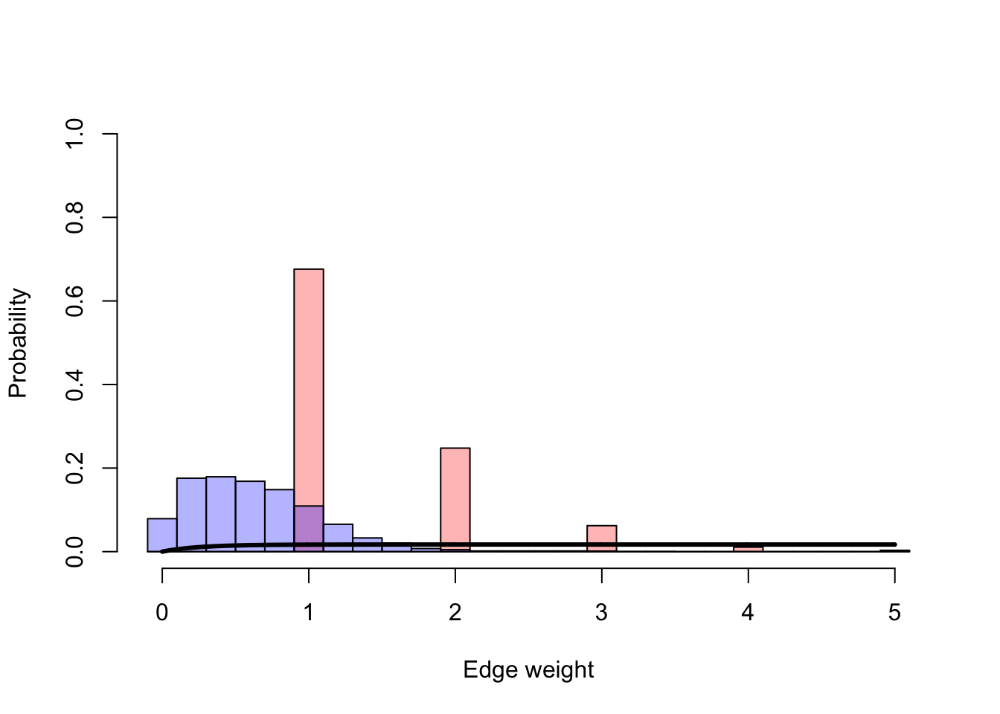
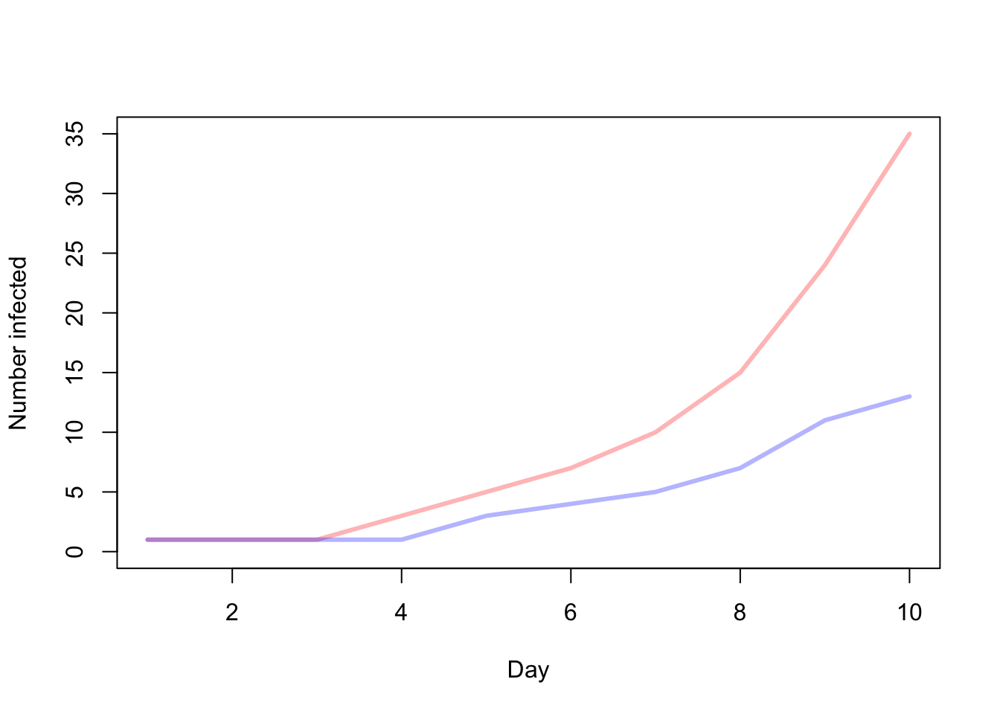
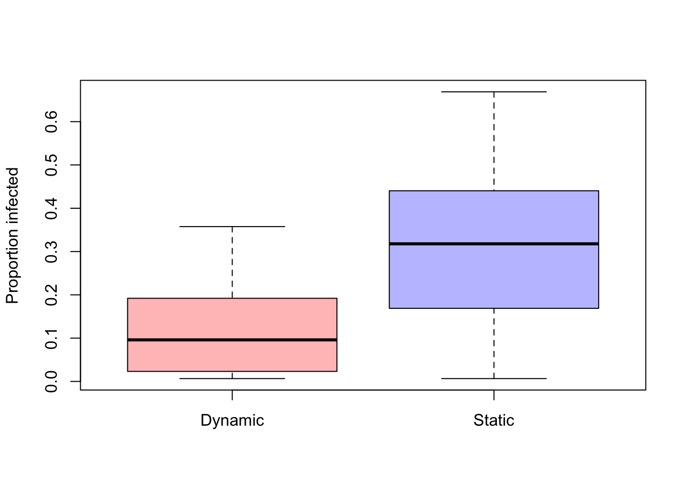

In the following exercise we will use code to simulate epidemics with different parameters for the probability of transmission. This code is extracted from the paper https://besjournals.onlinelibrary.wiley.com/doi/full/10.1111/1365-2656.12764.
The relationship between the transmission of the disease and the rate of contacts within the network can be explored by using different types of functions:
acc <- -1For this exercise we will use the example data included in the package asnipe. First we need to load the libraries and data.
# Libraries that we will use:
library(sna)
library(scales)
library(asnipe)
# Load data
data("group_by_individual")Now, we will define the parameters of the disease and the population. We can use different values for parameters such as transmission rate (\(\beta\)) or the number of days of the simulation.
# We need to use a seed in order these results be reproducible
set.seed(321)
N <- ncol(gbi)
beta <- 0.01 # Setting the probability of transmission
days <- 10 # Setting the number of days of the simulation
each <- 5
n.samples <- days*each
window <- rep(1:days,each=each)
# Probability of having a contact:
t.prob <- get_network(gbi)## Generating 151 x 151 matrixWe create a function that generates the probability of not having disease according to the type of function (accelerated, decelerated or linear)
# Function to obtain the probability of not generating the disease:
prob <- function(beta, x, acc) {
if (acc==1) {
# Accelerated function
prob <- (1/(1+exp(beta-5.5+x)))
prob <- prob+min(1-prob)
} else if (acc==-1) {
# Decelerated function
prob <- exp(-x*4)
prob <- 1-(1-prob)*beta*1.7
} else {
# Linear function
prob <- (1-(x*(beta)))
}
return(prob)
}In the following steps, we will create empty dynamic and static networks and fill them with information.
# Create an empty table to fill with infected subjects
ids <- data.frame(id=1:N,infected.dynamic=0,infected.static=0)
# Generate random networks:
samples <- rgraph(N,m=n.samples, # Number of samples
tprob=t.prob, # Probability of contact
mode="graph")# Generate the empty dynamic network
network.dynamic <- array(NA,c(days,N,N))
# Fill the network with the generated random networks
for (i in 1:days) {
network.dynamic[i,,] <- apply(samples[which(window==i),,],c(2,3),sum)
}# Create the static network
network.static <- apply(samples,c(2,3),sum)/days# Introduce an infected subject:
ids$infected.dynamic[sample(1:N,1)] <- 1
ids$infected.static <- ids$infected.dynamic
# We create empty objects to save the results
n.infected.dynamic <- rep(NA,days)
n.infected.static <- rep(NA,days)# Run the simulations for each day:
for (i in 1:days) {
# Dynamic
network.temp <- network.dynamic[i,,] # network on day i
probs <- prob(beta,
network.temp[which(ids$infected.dynamic==0),
which(ids$infected.dynamic==1),drop=FALSE], acc)
ids$infected.dynamic[which(ids$infected.dynamic==0)] <- apply(probs,1,function(x) { as.numeric(sum(sapply(x,function(y) { sample(c(0,1),1,prob=c(y,1-y))}))>0) })
n.infected.dynamic[i] <- sum(ids$infected.dynamic)
# Static
probs <- prob(beta,network.static[which(ids$infected.static==0),which(ids$infected.static==1),drop=FALSE], acc)
ids$infected.static[which(ids$infected.static==0)] <- apply(probs,1,function(x) { as.numeric(sum(sapply(x,function(y) { sample(c(0,1),1,prob=c(y,1-y))}))>0) })
n.infected.static[i] <- sum(ids$infected.static)
}Now that we have the results, we can plot the relationship between the transmission dynamics and the generation of contacts.
In our first plot we will be able to see the probability of a given number of contacts occur in a dynamic network (red) and in the same network but in a static representation (blue)
colpal <- c(alpha("red", 0.3), alpha("blue", 0.3))
a <- hist(network.dynamic[which(network.dynamic>0)],breaks = seq(-0.1, max(c(max(network.static), max(network.dynamic))) + 0.1, 0.2), plot=FALSE)
# Calculate proportions
a$counts <- a$counts/sum(a$counts)
# Plot the probability with different weights (number of contacts)
plot(a, col=colpal[1], ylim=c(0,1), xlab="Edge weight", ylab="Probability",main=NA)
a <- hist(network.static[which(network.static>0)],breaks=seq(-0.1,max(c(max(network.static),max(network.dynamic)))+0.1,0.2),plot=FALSE)
a$counts <- a$counts/sum(a$counts)
plot(a,add=TRUE,col = colpal[2])
lines(seq(0,max(c(max(network.static),max(network.dynamic))),0.01),1-prob(beta,seq(0,max(c(max(network.static),max(network.dynamic))),0.01),acc),lwd=3)
In the second plot we can see the cumulative number of infected individuals in a population of N = 50 for a period of 10 days.
plot(1:days,n.infected.static,type='l',col=colpal[1],lwd=3,xlab="Day",ylab="Number infected",ylim=c(0,max(c(n.infected.dynamic,n.infected.static))))
lines(1:days,n.infected.dynamic,col=colpal[2],lwd=3)
# Number of repetitions
n.reps <- 100
# Vectors to save the results
n.infected.dynamic <- matrix(NA,n.reps,days)
n.infected.static <- matrix(NA,n.reps,days)Now we will run the simulation multiple times and we will obtain the distribution of infected.
for (z in 1:n.reps) {
ids <- data.frame(id=1:N,infected.dynamic=0,infected.static=0)
samples <- rgraph(N,m=n.samples,tprob=t.prob,mode="graph")
network.dynamic <- array(NA,c(days,N,N))
for (i in 1:days) {
network.dynamic[i,,] <- apply(samples[which(window==i),,],c(2,3),sum)
}
network.static <- apply(samples,c(2,3),sum)/days
# Seed a diseased individual
ids$infected.dynamic[sample(1:N,1)] <- 1
ids$infected.static <- ids$infected.dynamic
# Run the days of the simulation
for (i in 1:days) {
# Dynamic
network.temp <- network.dynamic[i,,]
probs <- prob(beta,network.temp[which(ids$infected.dynamic==0),which(ids$infected.dynamic==1),drop=FALSE], acc)
ids$infected.dynamic[which(ids$infected.dynamic==0)] <- apply(probs,1,function(x) { as.numeric(sum(sapply(x,function(y) { sample(c(0,1),1,prob=c(y,1-y))}))>0) })
n.infected.dynamic[z,i] <- sum(ids$infected.dynamic)
# Static
probs <- prob(beta,network.static[which(ids$infected.static==0),which(ids$infected.static==1),drop=FALSE], acc)
ids$infected.static[which(ids$infected.static==0)] <- apply(probs,1,function(x) { as.numeric(sum(sapply(x,function(y) { sample(c(0,1),1,prob=c(y,1-y))}))>0) })
n.infected.static[z,i] <- sum(ids$infected.static)
}
}We can plot the distribution of the estimate of the proportion of infected subjects and compare the results of a dynamic network and the same network but in static representation
boxplot(cbind(n.infected.dynamic[,days]/N, n.infected.static[,days]/N), col=c(colpal[1],colpal[2]),names=c("Dynamic","Static"), ylab="Proportion infected")